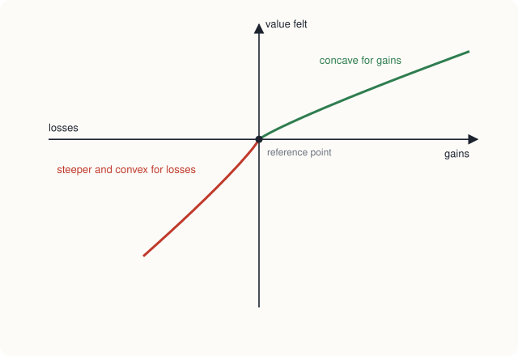

Chapter 13: Behavioural Economics¶
What happens when real people depart from the rational model
Learning outcomes
After studying this chapter you should be able to:
- State the main assumptions of the standard model of choice and explain what behavioural economics adds.
- Explain bounded rationality and describe common heuristics and the biases they can cause.
- Explain reference dependence, loss aversion and the shape of the value function in prospect theory.
- Describe the endowment effect, framing effects, mental accounting and the sunk cost fallacy.
- Show with numbers how present bias leads to preference reversals, and explain the role of commitment devices.
- Describe evidence on fairness and social preferences.
- Explain what a nudge is, give examples, and state the main arguments for and against nudges.
13.1 The standard model and its critics¶
The theory of the earlier chapters assumes that people:
- have stable, consistent preferences (complete and transitive, Chapter 5);
- maximise their utility, using all the relevant information and calculating correctly;
- care about final outcomes (how much they end up with), not about how outcomes are described or what they had before;
- weigh the future against the present consistently;
- care mainly about their own consumption.
These assumptions make the theory simple and powerful, and the predictions they produce (people buy less when prices rise, firms enter profitable markets) are confirmed again and again. But psychologists and economists have also documented many situations in which people behave in systematic ways that the standard model does not predict. Behavioural economics brings these findings into economics, using insights from psychology to build models of how people actually choose.
The field has a long history. Herbert Simon, who received the Nobel prize in economics in 1978, argued in the 1950s that people have limited ability to process information. The psychologists Daniel Kahneman and Amos Tversky, from the 1970s on, documented systematic patterns in judgement and choice; Kahneman received the Nobel prize in 2002 (Tversky had died in 1996). Richard Thaler, who applied these ideas to many economic questions, received the prize in 2017.
The important word is systematic. Random mistakes would cancel out across many people and would not matter much for markets. Behavioural economics is concerned with mistakes and departures that are predictable: most people make them, in the same direction.
13.2 Bounded rationality and heuristics¶
Simon's idea of bounded rationality is that people try to make good decisions but face limits of information, time and computing power. Instead of finding the best option among all possible ones, they often satisfice: they search until they find an option that is good enough, and stop. A person buying a phone does not compare every model on the market; she looks at a few and picks one that meets her needs.
To cope with complexity, people use heuristics: mental short cuts or rules of thumb. Heuristics are usually sensible and save effort, but they can lead to systematic errors, called biases. Kahneman and Tversky described several.
- Anchoring. People's estimates are pulled towards a number they have just seen, even an irrelevant one. In experiments, people asked first whether a quantity is more or less than a high number then give higher estimates of it than people first asked about a low number. In markets, a "recommended price" crossed out next to a sale price can act as an anchor, making the sale price look like a bargain.
- Availability. People judge how likely an event is by how easily examples come to mind. After a widely reported air crash, many people overestimate the danger of flying, though road travel is far more dangerous per kilometre; vivid, recent and well-publicised events seem more common than they are.
- Representativeness. People judge probabilities by how much a case resembles a typical example, and neglect base rates. A common form is the gambler's fallacy: after a coin has come up heads five times in a row, many people feel tails is "due", though the coin has no memory and the chance is still one half.
- Overconfidence. Most people overrate their own abilities and the accuracy of their knowledge. Overconfidence may lead people to trade shares too often, start businesses with poor prospects, or underestimate how long a project will take.
13.3 Prospect theory: losses loom larger than gains¶
The standard theory of choice under risk assumes that people judge a gamble by the final wealth it may leave them with. Kahneman and Tversky's prospect theory (1979) proposed instead that people judge outcomes as gains and losses relative to a reference point, usually their current situation or what they expected. It has three main features.
- Reference dependence. What matters is the change, not the level. A salary of ₹60,000 a month feels good to someone who expected ₹50,000, and bad to someone who expected ₹70,000.
- Loss aversion. A loss hurts more than a gain of the same size pleases. Many studies estimate that losses weigh roughly twice as much as equal gains.
- Diminishing sensitivity. The difference between gaining ₹100 and ₹200 feels larger than the difference between gaining ₹10,100 and ₹10,200. The same is true of losses.
These features give the value function its characteristic shape.

Example 13.1 Why people refuse a fair bet
You are offered a bet on the toss of a coin: heads, you win ₹1,000; tails, you lose ₹1,000. Suppose losses weigh twice as much as gains, so that a gain of \(x\) is valued at \(x\) and a loss of \(x\) at \(-2x\). Would you accept? How large would the win have to be?
Solution. The expected money value of the bet is \(\tfrac{1}{2}(1{,}000) + \tfrac{1}{2}(-1{,}000) = 0\). But its value, with loss aversion, is
You would refuse. To accept, the possible win \(G\) must satisfy \(\tfrac{1}{2}G - \tfrac{1}{2}(2{,}000) \ge 0\), that is, \(G \ge 2{,}000\). This matches the common finding that many people will accept such a bet only if the possible gain is about twice the possible loss.
Diminishing sensitivity also means that people tend to be risk-averse for gains (preferring a sure gain to a gamble with the same expected value) but risk-seeking for losses (preferring to gamble rather than accept a sure loss). An investor may sell shares that have risen, to lock in the gain, but hold on to shares that have fallen in the hope of getting back to the purchase price, which is a reference point. This tendency is called the disposition effect.
Prospect theory also finds that people overweight small probabilities. This helps explain why the same people may buy lottery tickets (overweighting a tiny chance of a large gain) and insurance against rare events (overweighting a tiny chance of a large loss).
13.4 The endowment effect¶
Loss aversion predicts that people value a thing more once they own it, because giving it up feels like a loss, while acquiring it would only be a gain. This is the endowment effect. In well-known classroom experiments, half the participants are given a mug and the other half are not; those with mugs are asked the lowest price at which they would sell, and those without are asked the most they would pay. Since the mugs were handed out at random, the two groups should value them similarly on average. In fact, in many such experiments the sellers ask for roughly twice what the buyers offer, and far fewer mugs change hands than the standard theory predicts.
The endowment effect helps explain why people keep things they would never buy at their current price, why "free trial" offers that let customers keep a product for a while are effective, and why workers resist pay cuts much more strongly than they welcome equal pay rises.
13.5 Framing, mental accounting and sunk costs¶
Framing¶
In the standard model, the way a choice is described should not matter if the outcomes are the same. In practice, it often does. A framing effect occurs when people choose differently between options with identical outcomes because the options are described differently.
A famous experiment by Tversky and Kahneman asked people to choose between programmes to deal with a disease expected to kill 600 people. Described in terms of lives saved ("programme A saves 200 people for certain; programme B gives a one-third chance of saving all 600 and a two-thirds chance of saving none"), most chose the certain programme A. Described in terms of lives lost ("under programme C, 400 people will die for certain; under programme D, there is a one-third chance that nobody dies and a two-thirds chance that all 600 die"), most chose the risky programme D. Yet A and C are the same, and so are B and D. Framed as gains, people avoided risk; framed as losses, they sought it, as prospect theory predicts.
Framing matters in everyday life too. Meat described as "90 per cent lean" sounds better than meat described as "10 per cent fat". A surcharge for paying by card is resented more than an identical discount for paying in cash.
Mental accounting¶
Money is fungible: a rupee is a rupee, whatever its source or intended use. But people often keep mental accounts, treating money differently depending on where it came from or what it is "for". A family may borrow at a high interest rate while keeping savings earning a low rate in an account labelled "for the children's education". People tend to spend windfalls (a bonus, a tax refund, a lottery win) more freely than regular income. Thaler developed the idea of mental accounting.
A classic illustration: a person who loses a ₹500 note on the way to buy a ₹500 cinema ticket is usually willing to buy the ticket anyway; a person who has bought the ticket and loses it is much less willing to buy another. In both cases the person is ₹500 poorer, but in the second the loss is charged to the "cinema account", making the film seem to cost ₹1,000.
The sunk cost fallacy¶
Chapter 1 explained that sunk costs should be ignored. People often do not ignore them. Someone who has paid for a year's gym membership may keep going to "get their money's worth" even when they would rather not; a government may continue a failing project because so much has already been spent on it. This sunk cost fallacy is related to loss aversion: abandoning a project means admitting the money spent was lost.
13.6 Present bias and self-control¶
Chapter 11 showed how to compare money now with money later by discounting. The standard model assumes that people discount the future consistently: if you prefer ₹100 today to ₹110 in a month, you should also prefer ₹100 in twelve months to ₹110 in thirteen months, since the trade-off is the same one-month delay.
Experiments find otherwise. Many people who choose ₹100 now over ₹110 in a month choose ₹110 in thirteen months over ₹100 in twelve. They are impatient about the immediate present but patient about the distant future. This is present bias.
Example 13.2 A preference reversal
A simple model of present bias says that any benefit not received now is valued at only a fraction \(\beta\) of its amount, with \(\beta = 0.5\) (and, for simplicity, no further discounting for longer delays). Compare the choices (a) ₹100 today or ₹150 in one week, and (b) ₹100 in 52 weeks or ₹150 in 53 weeks.
Solution. (a) Today, ₹100 now is worth 100; ₹150 next week is worth \(0.5 \times 150 = 75\). She takes ₹100 now.
(b) Both payments are in the future, so both are scaled by 0.5: \(0.5 \times 100 = 50\) against \(0.5 \times 150 = 75\). She plans to wait for ₹150.
But when week 52 arrives, choice (b) has become choice (a), and she switches to taking ₹100 immediately. Her plans are time-inconsistent: what she plans for the future is not what she does when the future comes. With consistent (exponential) discounting, the comparison would be the same in both cases and no reversal would occur.
Present bias explains why people plan to start saving, exercising or studying "next month" and then postpone again when next month comes. It helps explain undersaving for old age, procrastination over unpleasant tasks, and the difficulty of giving up smoking.
People who are aware of their present bias may seek commitment devices that restrict their future choices: savings accounts that cannot be drawn on before a certain date, automatic deductions from salary into a pension fund, paying in advance for a course of classes, or simply not keeping sweets in the house. Studies have found that many people choose such commitments when offered, which suggests they recognise their own self-control problems.
13.7 Fairness and social preferences¶
The standard model usually assumes that people care only about their own consumption. Many experiments suggest that people also care about fairness and about others' well-being.
In the ultimatum game, one player (the proposer) is given a sum of money, say ₹100, and offers some share of it to a second player (the responder). If the responder accepts, the money is divided as proposed; if she rejects, both get nothing. A purely self-interested responder should accept any positive offer, since something is better than nothing, and a self-interested proposer, knowing this, should offer the smallest possible amount. In practice, across many countries, proposers commonly offer a substantial share, often close to half, and responders frequently reject low offers, giving up money to punish what they see as unfair treatment.
In the dictator game, the second player has no choice: the first simply decides how much to give. Many people still give something, though less than in the ultimatum game.
Concern for fairness has economic consequences. Firms often avoid raising prices sharply during shortages (for example, of umbrellas in a sudden storm) because customers regard it as exploitation, even when the higher price would clear the market. Employers may pay more than the market wage because workers who feel fairly treated work harder, an idea related to efficiency wages. People also show reciprocity: they reward kindness and punish unkindness, even at a cost to themselves.
13.8 Nudges and choice architecture¶
If people's choices are affected by defaults, framing and the way options are presented, then those who design choices (governments, employers, websites, shop owners) inevitably influence them. Richard Thaler and Cass Sunstein, in their book Nudge (2008), called this choice architecture. A nudge is a feature of the way choices are presented that changes behaviour in a predictable way without forbidding any option or significantly changing economic incentives.
Examples include:
- Defaults. People tend to stick with whatever happens if they do nothing. When employees are enrolled in a pension scheme automatically, with the option to leave, participation is much higher than when they must actively sign up, although the choice open to them is the same. Countries differ in whether people are organ donors unless they opt out, or only if they opt in, and the default affects how many people are registered donors.
- Simplification. Making a form shorter or a process easier increases take-up of benefits, scholarships and services that people are entitled to.
- Reminders and timely information. Text messages reminding people of vaccination dates, loan repayments or medicine schedules can raise compliance.
- Social norms. Telling households how their electricity use compares with that of their neighbours has been found to reduce consumption.
- Salience and placement. Putting healthy food at eye level in a canteen, or showing the full cost of a loan prominently, changes choices.
Nudges are attractive to governments because they are cheap and preserve freedom of choice. They have also been criticised. Some argue that it is paternalistic for governments to decide what choices are "better" for people; others point out that the same techniques can be used to steer people towards choices that benefit the designer rather than the chooser, as when websites make it easy to subscribe and hard to cancel. And nudges cannot replace taxes, regulation and public provision where the stakes or the market failures are large.
Key idea
Behavioural economics does not throw away the standard model. It keeps the idea that people respond to incentives and adds that they also respond, in predictable ways, to how choices are framed, to reference points, to defaults and to the timing of costs and benefits. Good policy and good business take both into account.
13.9 How much does it matter?¶
Behavioural findings raise a fair question: if people are so often "irrational", can the theory of the earlier chapters be trusted? Three points suggest that it can, within limits.
- Many predictions survive. Demand curves slope down, people respond to prices, and firms enter profitable markets, whatever the psychology of individual buyers.
- Markets and learning can reduce some biases. People who make the same choice often, with quick feedback, tend to learn. Professional traders show the endowment effect less than inexperienced people, for example. Biases matter most for choices that are rare, complex and delayed in their consequences: choosing a pension, buying a house, choosing a course of study, or deciding how much to save.
- The standard model is a benchmark. Knowing what a fully rational person would do helps to identify where and why real behaviour differs, and what can be done about it.
The most productive view is that the standard model and behavioural economics are complements: the first explains much of what happens in markets, and the second improves predictions and policies where psychology matters most.
13.10 Summary¶
- The standard model assumes consistent preferences, full rationality, concern with final outcomes, consistent discounting and self-interest. Behavioural economics uses psychology to study systematic departures from these assumptions.
- Bounded rationality leads people to satisfice and use heuristics, which can cause biases: anchoring, availability, representativeness (including the gambler's fallacy) and overconfidence.
- Prospect theory: people value gains and losses relative to a reference point; they are loss averse (losses count roughly twice as much as gains in many studies); and sensitivity diminishes with size. They are risk-averse for gains, risk-seeking for losses, and overweight small probabilities.
- The endowment effect: people value what they own more than identical things they do not own.
- Framing effects, mental accounting and the sunk cost fallacy show that the description and labelling of choices affect decisions.
- Present bias causes time-inconsistent choices and procrastination; commitment devices help people stick to their plans.
- Experiments such as the ultimatum game show concern for fairness and reciprocity.
- Nudges (defaults, simplification, reminders, social norms) change behaviour without restricting choice; they are cheap but have limits and critics.
13.11 Exercises¶
Exercise 1
Name the bias in each case: (a) after a series of red results at a roulette table, a player bets heavily on black because "black is due"; (b) a shop puts a ₹9,999 watch next to a ₹2,999 one to make the second look cheap; (c) after news of a shark attack, many tourists avoid the sea, while driving to the beach is far more dangerous.
Answer
(a) The gambler's fallacy (representativeness). (b) Anchoring. (c) The availability heuristic.
Exercise 2
With a value function in which losses count 2.5 times as much as gains (\(v = x\) for gains, \(v = 2.5x\) for losses), would a person accept a coin-toss bet to win ₹1,500 or lose ₹1,000? What is the smallest win that would make her accept a bet with a possible loss of ₹1,000?
Answer
Value \(= 0.5 \times 1{,}500 - 0.5 \times 2.5 \times 1{,}000 = 750 - 1{,}250 = -500\), so she refuses, although the expected money value is +₹250. She accepts if \(0.5G \ge 1{,}250\), that is, \(G \ge\) ₹2,500.
Exercise 3
Using the present-bias model of Example 13.2 with \(\beta = 0.6\), does the person choose ₹200 today or ₹300 next week? What does she plan for the choice between ₹200 in 10 weeks and ₹300 in 11 weeks?
Answer
Today: 200 against \(0.6 \times 300 = 180\), so she takes ₹200 today. For the future choice: \(0.6 \times 200 = 120\) against \(0.6 \times 300 = 180\), so she plans to wait for ₹300. When week 10 arrives she will switch, a preference reversal.
Exercise 4
Explain how the endowment effect is related to loss aversion.
Answer
Once a person owns a thing, giving it up is coded as a loss, while acquiring an identical thing would be a gain. With loss aversion, losses weigh more than gains, so the minimum price at which the owner will sell exceeds the maximum price a non-owner will pay.
Exercise 5
A government wants more people to save for retirement. Suggest two nudges and one policy that is not a nudge.
Answer
Nudges: automatic enrolment in a pension scheme with the option to leave; automatic escalation, under which contributions rise with each pay rise unless the worker opts out; simplified forms; reminders. A policy that is not a nudge: a tax incentive for pension contributions, or compulsory contributions, since these change incentives or restrict choice.
Exercise 6
In an ultimatum game over ₹100, what would a purely self-interested responder accept, and what does evidence suggest actually happens?
Answer
A purely self-interested responder would accept any positive offer, even ₹1, since something is better than nothing. In experiments, responders frequently reject low offers, giving up money to punish unfairness, and proposers often offer a substantial share, frequently close to half.
13.12 Quiz¶
Check your understanding of Chapter 13
Exercise 1
Bounded rationality means that people
- are irrational
- try to choose well but face limits of information and computing power
- always maximise utility
- care only about others
Answer
try to choose well but face limits of information and computing power
Exercise 2
Loss aversion means that
- people avoid all risks
- a loss hurts more than an equal gain pleases
- people prefer losses to gains
- people ignore losses
Answer
a loss hurts more than an equal gain pleases
Exercise 3
In prospect theory, the value function is
- concave for gains and convex for losses, and steeper for losses
- a straight line through the origin
- convex for gains and concave for losses
- flat for losses
Answer
concave for gains and convex for losses, and steeper for losses
Exercise 4
Owners of a mug ask much more to sell it than non-owners will pay for it. This is
- anchoring
- the endowment effect
- present bias
- the gambler's fallacy
Answer
the endowment effect
Exercise 5
A person plans to start exercising next Monday, but when Monday comes she puts it off again. This illustrates
- present bias
- loss aversion
- mental accounting
- signalling
Answer
present bias
Exercise 6
Enrolling workers in a pension scheme automatically, with the freedom to opt out, is an example of
- a tax
- a ban
- a nudge using a default
- a price ceiling
Answer
a nudge using a default
Exercise 7
With losses weighted twice as much as gains, what is the smallest possible win (in rupees) that makes a 50-50 bet with a possible loss of ₹500 acceptable?
Answer
1000 / 1,000 / ₹1,000 / ₹1000